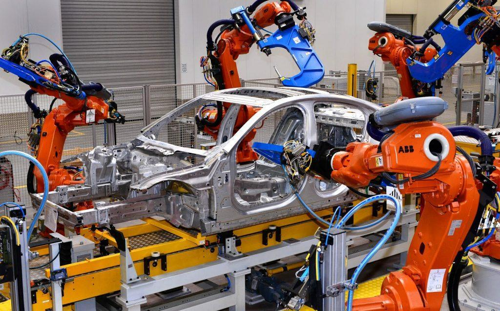
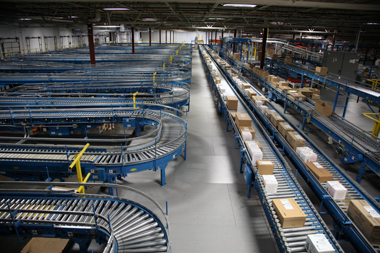
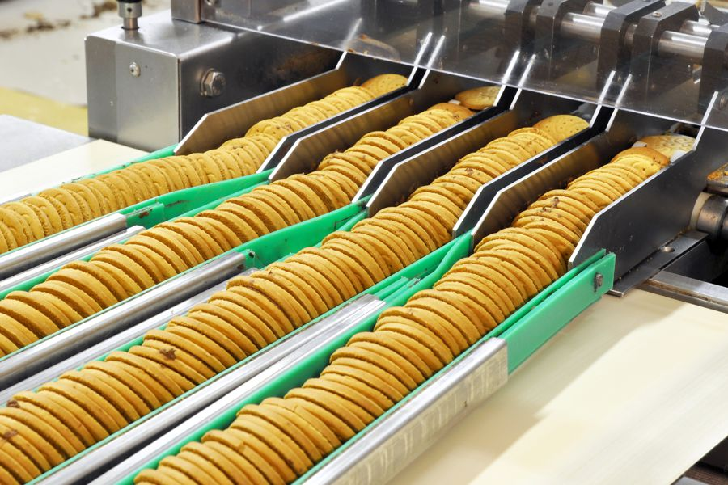
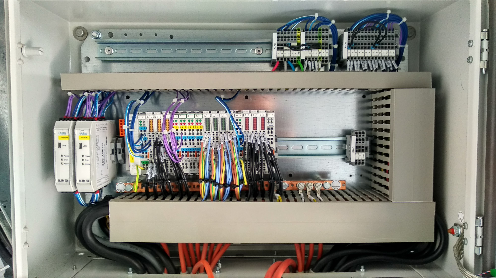

Penerapan Otomasi dalam Industri
Otomasi dalam industri memainkan peran penting dalam meningkatkan efisiensi, mengurangi biaya, dan mengoptimalkan proses produksi. Berikut adalah beberapa contoh penerapan otomasi dalam industri:
1. Otomasi dalam Industri Manufaktur
Di industri manufaktur, otomasi digunakan untuk meningkatkan efisiensi produksi. Robotik digunakan untuk merakit produk, memindahkan barang di jalur produksi, dan melakukan tugas berulang seperti pengelasan, pengepakan, dan pengecatan. Dengan penggunaan robot, proses produksi menjadi lebih cepat dan lebih konsisten.
2. Otomasi dalam Industri Pengepakan
Penerapan otomasi di industri pengepakan memungkinkan untuk meningkatkan kecepatan pengepakan, mengurangi kesalahan manusia, dan meningkatkan akurasi. Mesin pengemas otomatis dapat mengemas produk dalam waktu yang lebih cepat dibandingkan dengan pengepakan manual, sehingga mengurangi biaya tenaga kerja dan meningkatkan produktivitas.
3. Otomasi dalam Pengolahan Makanan
Industri pengolahan makanan menggunakan otomasi untuk meningkatkan kualitas dan konsistensi produk. Mesin pengolah makanan otomatis digunakan untuk mengiris, memasak, mengemas, dan mengawetkan produk. Sistem ini dapat bekerja lebih cepat dan lebih efisien daripada proses manual, menghasilkan produk yang lebih aman dan higienis.
4. Otomasi dalam Pengelolaan Energi
Otomasi dalam pengelolaan energi digunakan untuk memonitor dan mengendalikan distribusi energi di pabrik atau bangunan besar. Sistem SCADA (Supervisory Control and Data Acquisition) digunakan untuk mengawasi penggunaan energi dan mendeteksi masalah pada peralatan secara real-time, memungkinkan penghematan energi dan mencegah kerusakan yang lebih besar.

5. Otomasi dalam Pengendalian Proses Industri
Otomasi dalam pengendalian proses industri melibatkan penggunaan PLC (Programmable Logic Controller) dan sensor untuk mengontrol dan memonitor berbagai proses produksi seperti pengolahan kimia, pembuatan bahan baku, dan pengolahan air. Sistem ini membantu memastikan bahwa proses produksi berjalan dengan efisien dan aman, serta dapat mengidentifikasi potensi masalah sebelum terjadi.
